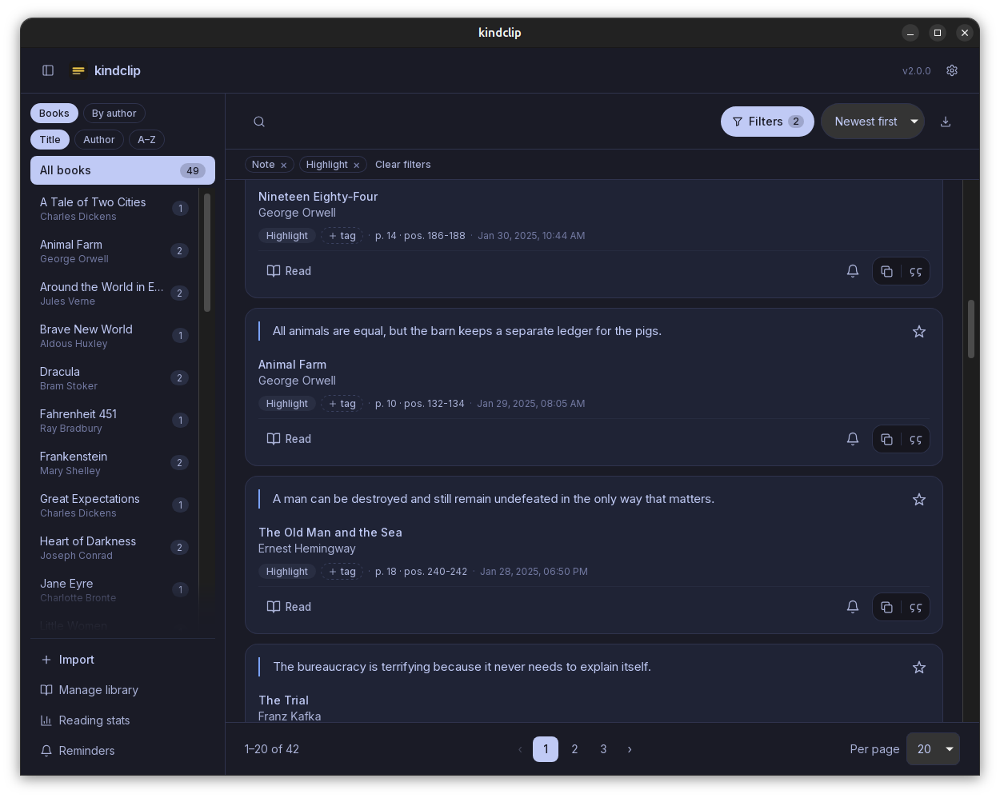
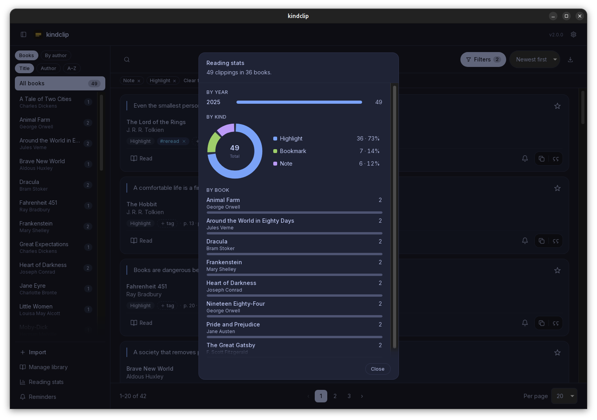
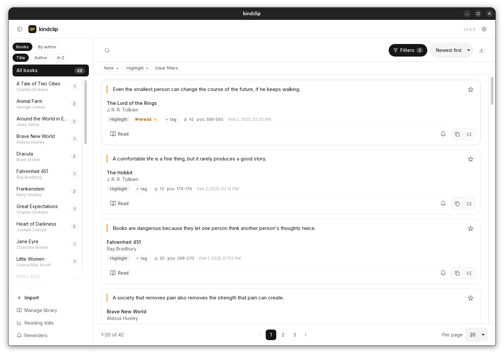
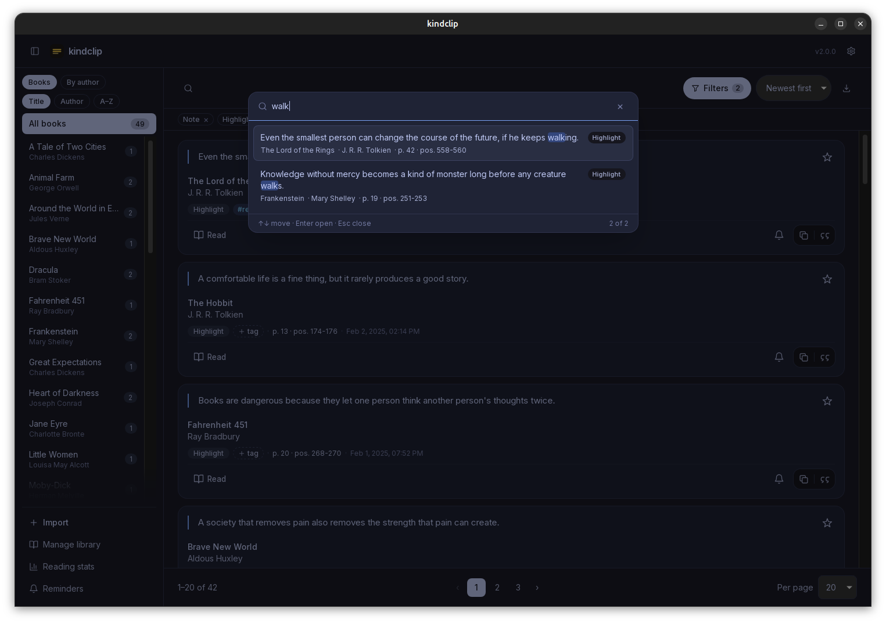

A parser that doesn't flinch
UTF-8 or UTF-16, six date locales, highlights, notes and bookmarks. Duplicates skipped.
Kindle clippings · Desktop library
kindclip reads My Clippings.txt once and turns years of
highlights, notes and bookmarks into a fast, searchable library,
with reading stats and reminders for what you mean to revisit.
v2.1.2·Free·MIT-licensed·No account
One SQLite file on your disk. Nothing is uploaded, ever.
No sign-up, no subscription, no sync service in the middle.
Windows, macOS and Linux, as small native builds.

1 file
the only thing you import
0 accounts
servers, sync or sign-up
8 palettes
each checked for WCAG AA
6 locales
Kindle date formats parsed
01 — Capabilities
No dashboards, feeds or subscriptions. Import once, search across books and authors, keep what matters, and take it with you.
UTF-8 or UTF-16, six date locales, highlights, notes and bookmarks. Duplicates skipped.
Full text across content, title and author, ignoring accents and case. Every hit highlighted.
Favorites, tags, author filters and a grouped sidebar, all in one SQLite file.
Open full-window, edit notes inline, reset any time. The clippings file is never touched.
Markdown quotes, JSON, CSV, or one file per book for Obsidian. Verified daily backups.
Schedule a system notification for any clipping: tonight, tomorrow, in a week or an exact time.
Seven dark palettes, five text sizes and a list density, all tuned to clear WCAG AA.
A fast Tauri binary with system themes, five languages and full keyboard control.

02 — The file
Your Kindle writes everything you highlight, note or bookmark into a single plain-text file on the device. It is the only copy that includes books you sent over USB, and it is what kindclip reads.
Connect it with a USB cable and open the drive that appears. No app and no Amazon login are involved.
documents folder
My Clippings.txt sits at the root of
documents/. It is appended to as you read, so
copying it again later brings in the new highlights.
Copy it to your computer and import it. The Kindle keeps writing to its own copy; kindclip only ever reads.
What the file holds
| Books | Every book on the device, bought or sideloaded |
|---|---|
| Kinds | Highlights, notes and bookmarks |
| Metadata | Title, author, page or location, and the date |
| Format | Plain text, entries split by ========== |
| Ownership | Stays on the device; never rewritten by kindclip |
03 — Themes
A light theme and seven dark palettes — Atom One Dark, Darcula, Nord, Solarized Dark, Rosé Pine, Gruvbox Dark and Tokyo Night — ported token by token. Every text pair is tuned to clear WCAG AA on the surfaces it lands on.

A comfortable life is a fine thing, but it rarely produces a good story.
The Hobbit
HighlightEven the smallest person can change the course of the future, if he keeps walking.
The Lord of the Rings
HighlightBooks are dangerous because they let one person think another person's thoughts twice.
Fahrenheit 451
HighlightKnowledge without mercy becomes a kind of monster long before any creature walks.
Frankenstein
HighlightA society that removes pain also removes the strength that pain can create.
Brave New World
HighlightThe happiness of your life depends upon the quality of your thoughts.
Meditations
HighlightIt is not that we have a short time to live, but that we waste a lot of it.
On the Shortness of Life
HighlightNo man ever steps in the same river twice, for it is not the same river and he is not the same man.
Fragments
Highlight04 — Keyboard
Ctrl/Cmd+P searches the whole library — across books
and active filters, newest first. Move with ↑/↓, press Enter to
read, Esc to get back. The footer counts the matches; your current
filters stay exactly where they were.
Navigation
Actions

05 — Install
Download the build for your platform, copy one file from the Kindle, and import. Re-import any time: duplicates are skipped and new highlights are added.
Linux .AppImage/.deb, Windows
.exe, or macOS .dmg for Apple
Silicon and Intel.
Connect the Kindle and copy
documents/My Clippings.txt to your computer.
Press Import or drop the .txt
anywhere on the window. Search, tag and star; copy a quote or
export the filtered view whenever you want it elsewhere.
Heads-up: macOS and Windows builds are unsigned, so Gatekeeper or SmartScreen will warn on first launch. The source is public — build it yourself if you prefer.
| Linux | .AppImage · .deb |
|---|---|
| Windows | .exe installer |
| macOS | .dmg, ARM + Intel |
| License | MIT, forever |
Built by GitHub Actions on every release.
Never. The file is read on import; your original content stays
untouched. Note edits live in kindclip.db next to the
original text, and you can reset any note to what the Kindle
wrote.
In one SQLite file in the standard per-OS config directory:
~/.config/app.kindclip/kindclip.db on Linux,
%APPDATA%\app.kindclip\kindclip.db on Windows, and
~/Library/Application Support/app.kindclip/kindclip.db
on macOS. Nothing is uploaded, ever. Delete the file to wipe the
library and re-import from scratch.
Preferences → Data saves a consistent snapshot of the database
with a date in the name, and kindclip also snapshots the library
once per launch, keeping the newest seven in a
backups/ folder next to the database. A restore
verifies the file is real SQLite with the kindclip tables,
previews its contents, and keeps the replaced file as
kindclip.db.before-restore. Re-importing restores
clippings, but not favorites, tags or edited notes — the backups
cover those.
No. kindclip is a desktop app built with Tauri: a Rust backend, a Svelte 5 frontend and SQLite, shipped as small native binaries. The reading happens on your machine.
Yes. kindclip is MIT-licensed: free to download and use, with no account, no subscription and no upload. The full source is on GitHub.
Download
Free, MIT-licensed and local by design. One download, no account, no subscription.
Linux · Windows · macOS